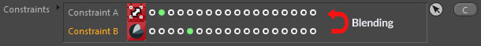
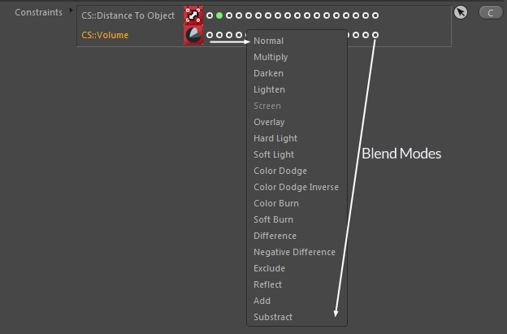

Constraints
Constraints are a cornerstone of the framework and allow you to control functionality of other operating nodes (similar to Mographs Effectors).
You can see constraints like alpha channels controlling the intensity of an image.
Constraints usually mask the node's effect intensity, so their value range lies most of the time between 0% - 100%.
You will use constraints in your everyday work as they are really one of the most important components to customize and extent the framework functionality
and specialize other operating nodes to meet your requirements.
The great thing is that almost all nodes in the framework can use them and that they can be called fully multithreaded.
So you better get used to them if you want to create complex setups.
Constraints

The constraints are always evaluated in the order specified by the list:
Constraint A -> Constraint B -> Constraint C...
Each constraint returns a floating point value; most of the time ranging from 0.0 to 1.0 (0% to 100% if seen as an intensity).
So they are layered and the result of the current constraint will always be blended
with the previous constraint's result (similar to layers in Photoshop or C4D's Layer Shader but blending is bottom-to-top).
The blend mode for each layer can be set behind each constraint in the list (one dot for each blend mode).
Clicking in that area will open a popup menu where you can choose the blend mode from.

By default the blend mode "multiply" is used.
So our list will be calculated as:
Constraint A * Constraint B * Constraint C